Many of us cannot imagine life without coffee and why should we? With such a rich tradition of locally grown coffee, India has plenty of choice for the modern coffee consumer and connoisseurs too. From single estate coffees to premium instant coffees available online and in stores, there is a perfect coffee for every coffee lover here. Not only are big FMCG companies enjoying a slice of the market but there are quite a few boutique brands and cafe chains that are all fighting for our attention. So, we put together a list of the best coffee brands in India, with a few popular brands that we always turn to when an artisanal cup of coffee is either out of our budget or out of reach.
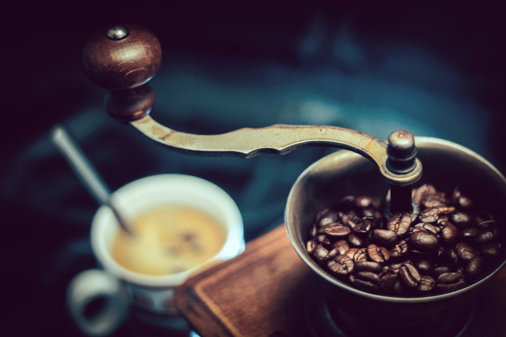The name Blue Tokai comes from an ancient word for the tail of a peacock –tokai – and this tail makes up the logo of the Delhi based artisanal coffee brand Blue Tokai. Faced with the lack of freshly ground good coffee in Delhi, Matt and Namrata established Blue Tokai as their attempt to bring good coffee to north India. The company roasts coffee twice every week and sends out custom ground coffee to clients across India. They have single orders and monthly subscriptions.
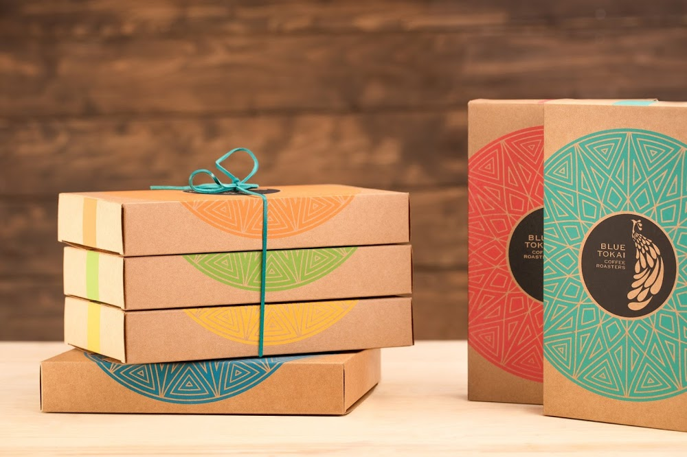Davidoff is one of the luxury coffee brands that is available in India. This coffee is made using 100% Arabica beans which are considered the best coffee beans in the world. The coffee is roasted in a well-balanced environment in order to preserve the maximum flavor of the beans during the roasting process. There are various things that Davidoff takes into consideration before roasting the coffee beans just so they can preserve the flavor of the coffee.
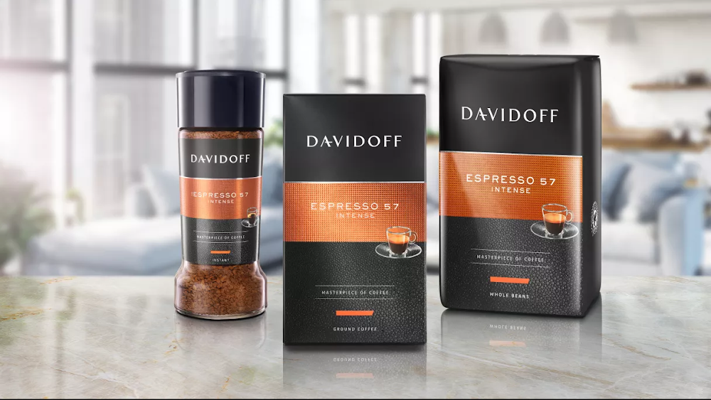They’ve been serving some of the best cups of coffee since 1971. For them, it always has been and will always be about quality. They’re passionate about ethical sourcing of coffee and use only the finest Arabica coffee beans and roast them with great care. They have blends ranging from medium to dark roast. Get the India Estates Blend or the Fair Trade Certified Italian Roast.
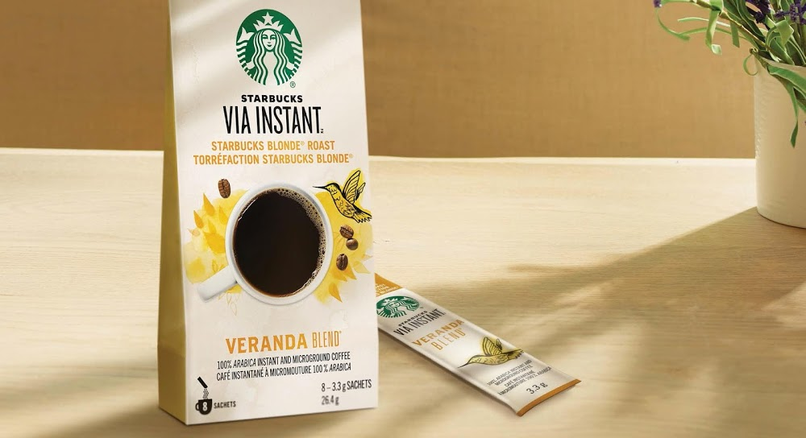The Indian Bean is on a mission to promote and increase access to good quality Indian coffee. The team has traveled from Nepal to Coorg to research and bring the best beans. One must try the Bello blend for a rich and strong cup or the Melnad blend for a taste of South Indian coffee. They even have subscription packs that can be delivered to your doorstep every month.
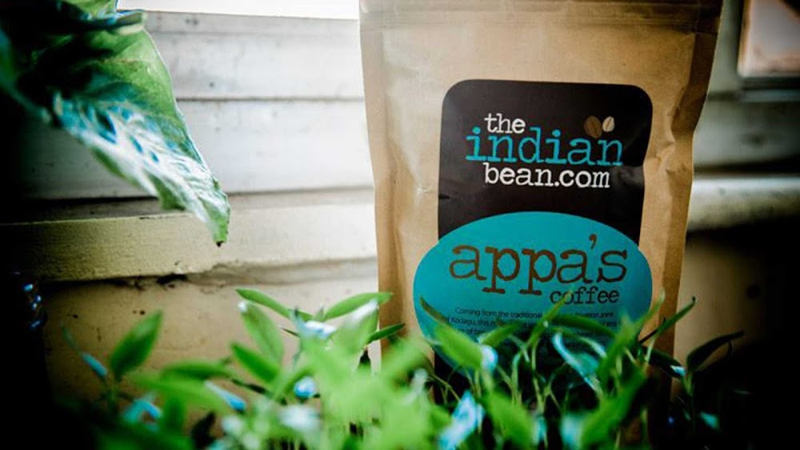They started in 2013 and had modest beginnings. They began with an initial offering of just two blends, and today, have about six blends that include medium and light bodied coffee. You can also order your very own filter coffee makers, brewing equipment and accessories. They export their exquisite blends of fine, shade-grown coffee to several countries all over the world.
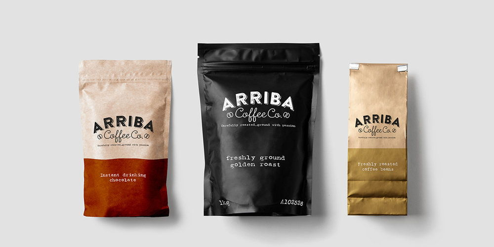Seven Beans offers seven unique blends with Arabica and Robusta beans. This roastery is an Indian-Italian venture with Indian coffee planters and Italian roasters. They do have both Indian and Italian blends to pick from. Get the complex Urja or the delicate and caramel-flavored Mishta to start your day.
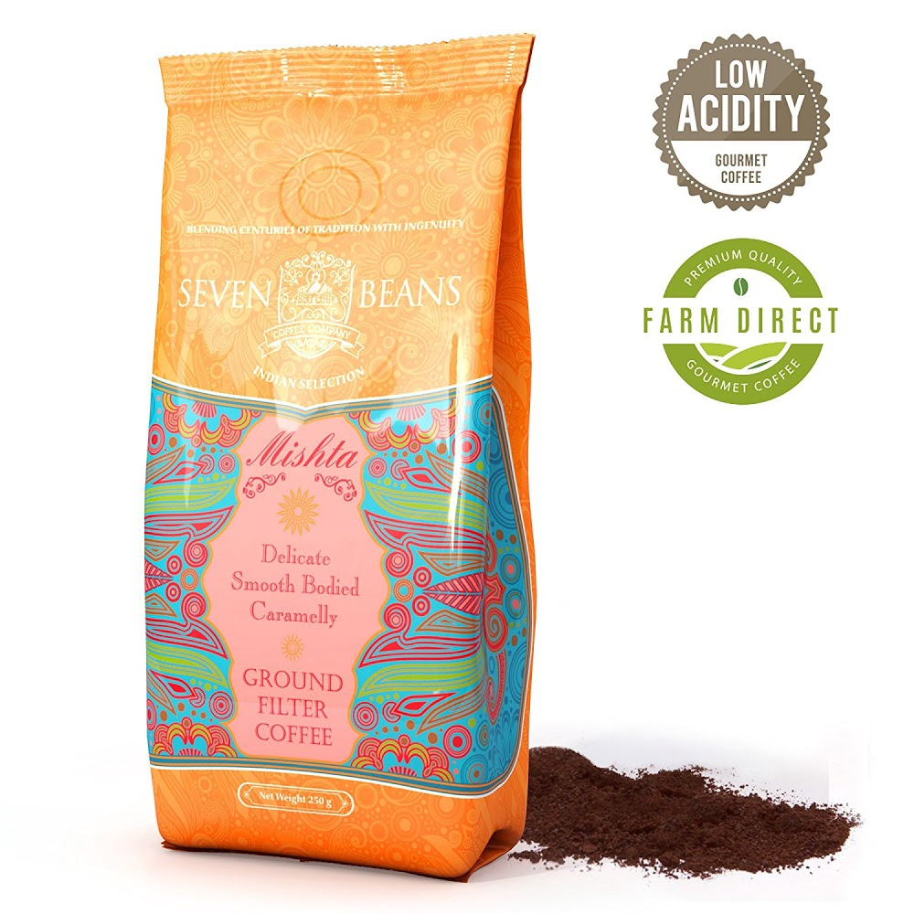The Flying Squirrel started in 2013 and is today one of the leading online coffee brands in India. Most of its coffee is grown in Coorg where the main estate (the 100-year-old Nellikad Estate) is located. One of the most common animals seen in this area is the flying squirrel and the coffee brand has taken its name from this little animal that glides from tree to tree feeding on berries and fruit. Today the brand offers six varieties of coffee plus blends and other coffee related products. The Flying Squirrel Taster’s Whole Coffee Beans 6 pack is a great way of exploring the best that this brand has to offer.
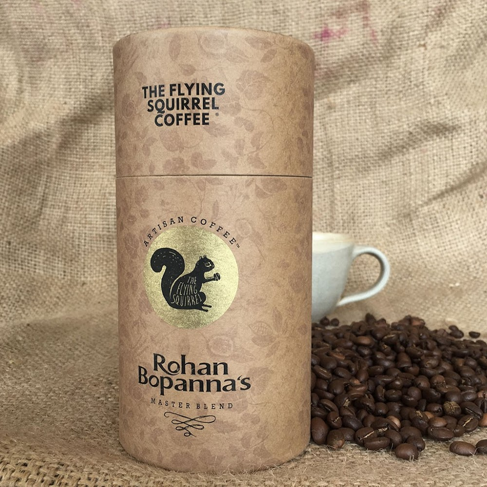Nescafe is definitely one of the most FAQbrands of coffee in India. It was launched in 1938 in Switzerland and has been popular across various countries. Nescafe is one of the most loved and oldest coffee brands in India. It has many manufacturing units and coffee machines set up at many public places due to its popularity. Nescafe is known to sell over 700 million coffee cups on a daily basis. It has a whopping 55% share of the Indian market and is available in almost 180 countries.
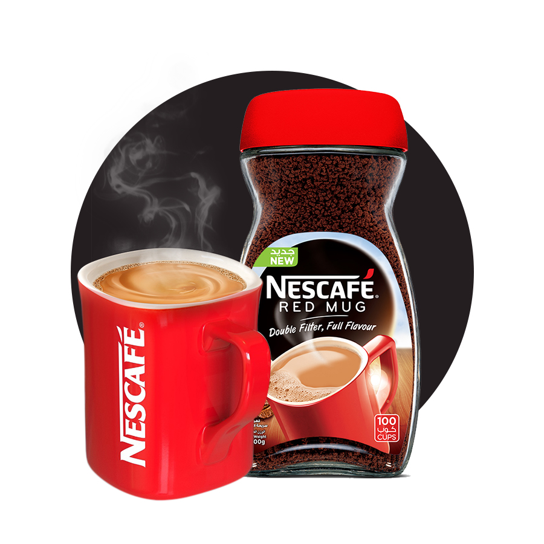Bru is known as one of the favorite coffee brands in India, which was introduced by Hindustan Unilever Limited in 1969. It holds about 49.6% of the market share in India. This brand is considered as a second best selling, right after Nescafe. Bru is coming under the banner of Brooke Bond Green Label. BRU instant coffee, BRU Exotic, BRU Gold, BRU Select, BRU Roast and Ground etc are the variants of BRU coffee.
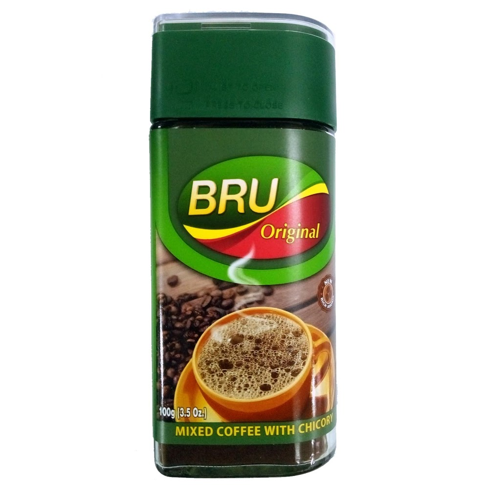Café Coffee Day or CCD is an Indian café chain that was founded in 1996. It is a subsidiary of Coffee Day Enterprises and today has a strong presence in six countries serving nearly two billion cups of coffee a year. The company not only grows and processes its own coffee but also makes coffee machines and the furniture for its outlets to reduce costs and fully integrate its operations. Coffee Day Mysore Royal Coffee Powder has exotic spicy notes. This shade grown handpicked coffee comes in a re-sealable tin that keeps the freshness and aroma of the coffee powder locked in.
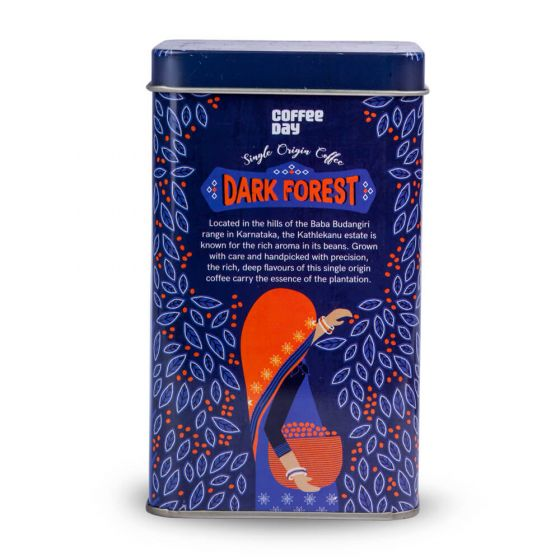